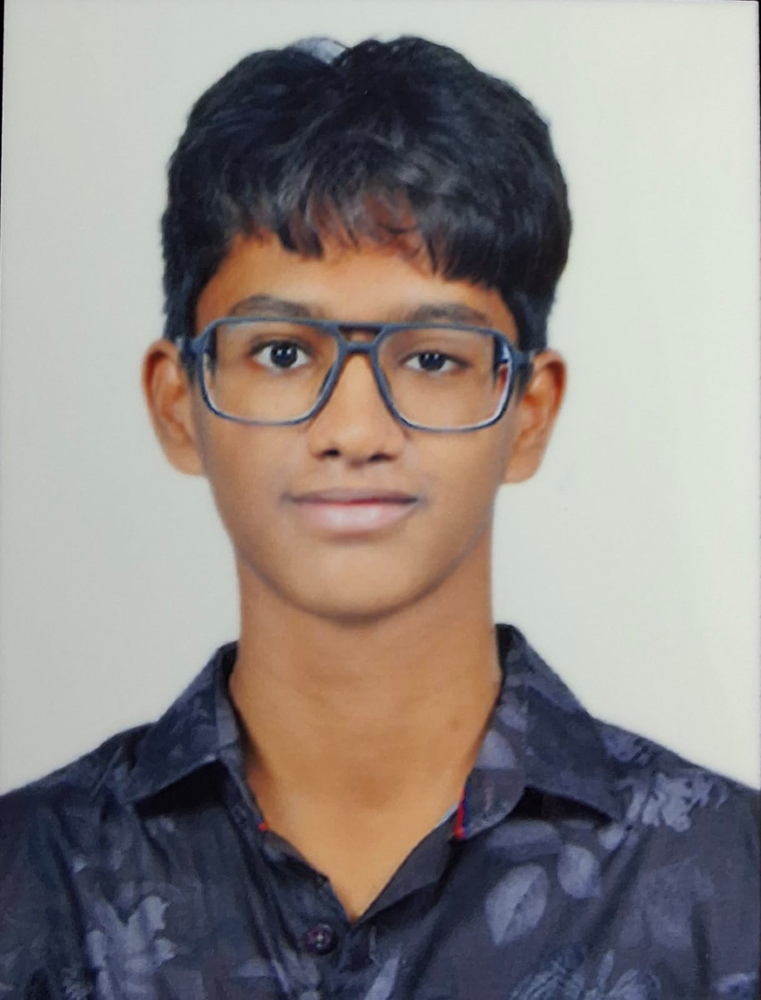

To build a strong foundation in computer science and secure opportunities that help me grow technically and professionally.
Motivated B.Tech student with a strong interest in programming and web technologies. Quick learner with good problem-solving and teamwork skills.
Interested in web development, problem solving, and building real-world projects. Actively improving coding and design skills.